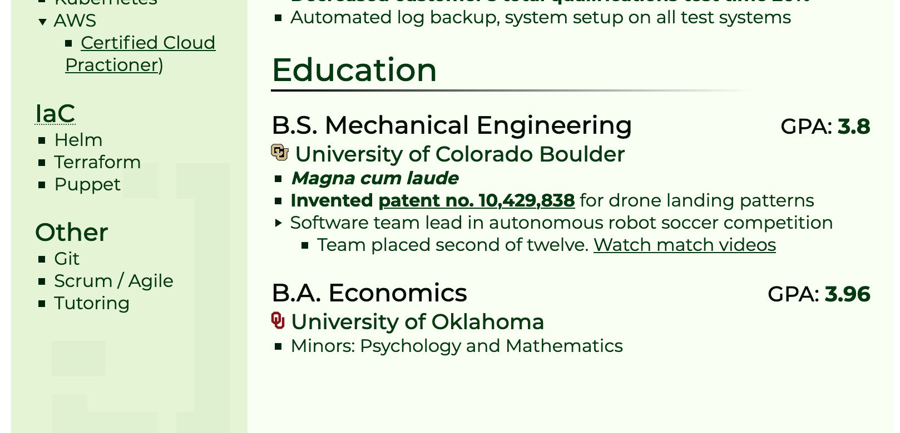
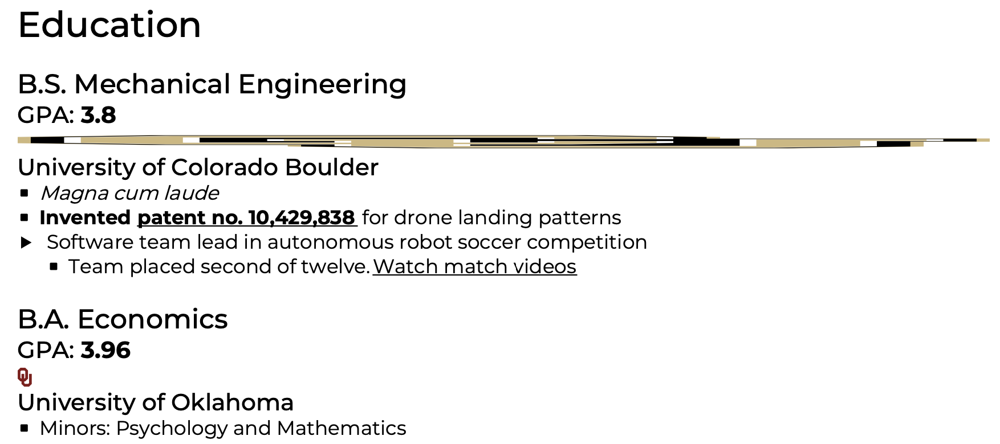
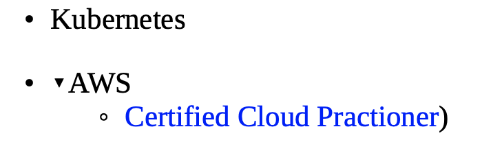

This is just a PSA for anyone who, like me, thought otherwise.
Pandoc, the go-to command-line general purpose converter, has this to say about HTML to PDF conversion:
... pandoc uses the following defaults depending on the output format specified using -t/--to ... *
-t html: wkhtmltopdf (other options: prince, weasyprint; see print-css.rocks for a good introduction to PDF generation from HTML/CSS.)
First interesting point here: the people at Pandoc know PDF is a shitshow, and farm out PDF content generation to other engines depending on input type.
Two hours ago, I thought that was just Pandoc not needing to reimplement a perfectly working wheel, and I could just call on wkhtmltopdf myself and spend more time figuring out how to use it in GitHub actions.
Here's a snippet from my garish resume as it stood when I wrote this article: 
It's open-source, it's a one-line brew (brew install --cask wkhtmltopdf), and the basic usage is just wkhtmltopdf http://google.com google.pdf.
Test:
brew install --cask wkhtmltopdf
wkhtmltopdf https://richards.dev/cv cv.pdf
Output:

To be fair, it's... good enough for content. The typeface is preserved, as is the spacing between sections, and if the content had to appear in one column, that's not the worst way of doing it.
That being said, the background color is gone, the skills sidebar is no longer a sidebar (since everything is one column), "magna cum laude" looses the bold italics to plain italics, and, of course, there is that laffy-taffy CU logo stretched across the entire page (though the height is correct, which may or may not be a selling point).
At this point, I assumed that open-source was a best effort attempt that was still short of industry standards. In the above Pandoc quote, they explicitly call out print-css.rocks as a good source of information on HTML to PDF conversion. Conveniently, PrintCSS has a rating page of the pdf converters they'ved used:
PDFreactor
...
- Pricing:
- 4 CPU cores server licence: 2950 USD
Personal non-commercial licence: free
Personal review:
Excellent workhorse, very compliant and complete implementation of the CSS Paged Media standard. ...
- PDFreactor is now our premier choice for customer projects.
Transitively, that's a pretty good reference.
While not nearly as easy to set up, I eventually found the samples page:
> curl --request POST \
> --header "Cache-Control: no-cache" \
> --header "Content-Type: application/json" \
> --data '{ "document": "https://richards.dev/cv" }' \
> "http://localhost:8080/service/rest/convert.pdf" > a.pdf
Which works if you have their docker image running:
docker pull realobjects/pdfreactor
docker run -d -p 8080:9423 realobjects/pdfreactor
Honestly, this one was even worse:

As before, we get single columns, no colors, and (not pictured) some insanely blown up icons.
In addition, though, we also get extra bullet markers, whitespace issues, no font carryover, no custom bullet markers, and no custom link styling.
Let's look at that price tag one final time: 2950 USD.
Don't expect PDF rendering to be easy. PDF is a beautiful hodgepodge of functionality and sub-versions (even worse than CSS), and flexbox probably isn't the way to go.
We'll see what happens when I try this again with my simple resume.